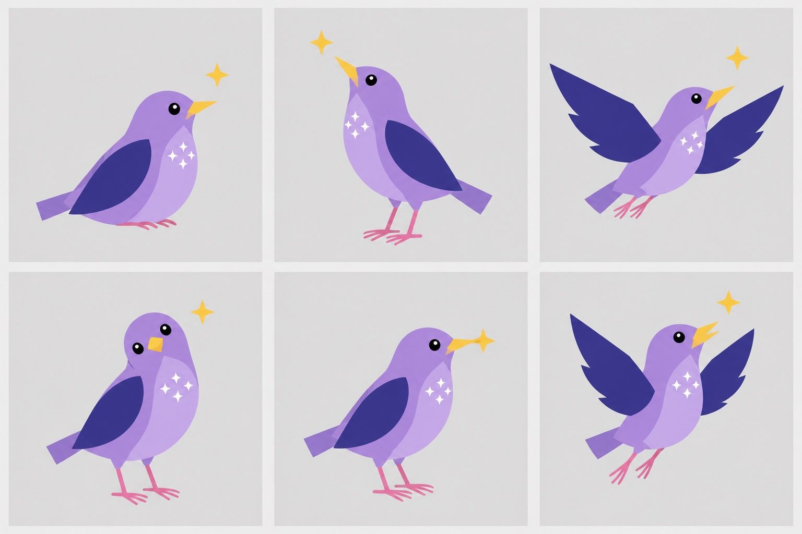
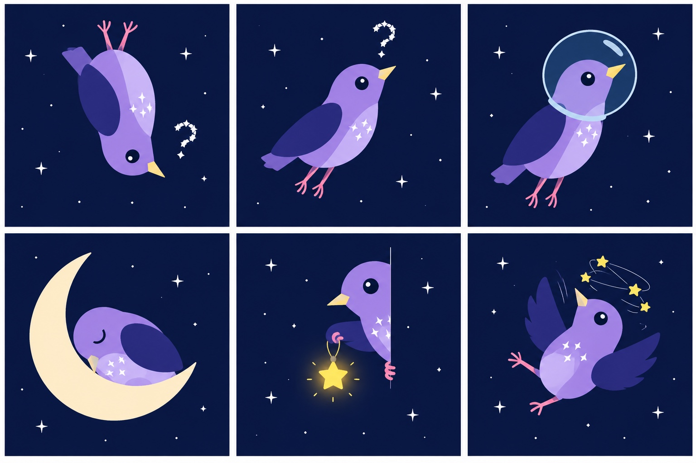
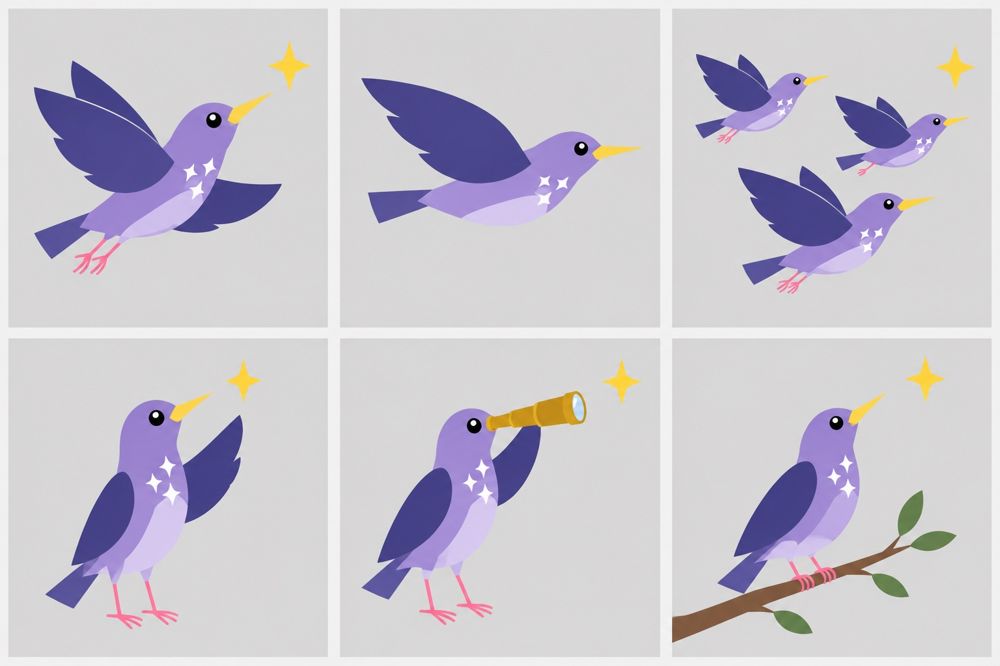

Our starling in new poses
Figma drew our OG starling in new poses for the lost-in-space page and the About page. It can't copy the OG perfectly, so some came out a bit rounder or with extra speckles. When you pick one, I'll trace it into SVG and match it back to the OG's colors, eye, beak and star. Pick by number, like "L4".
OG
Our logo, for comparison.
P. Everyday poses
P1 sitting down resting. P2 facing left, gazing up at the star. P3 wings spread wide. P4 head tilted curiously toward you. P5 holding the star in its beak. P6 a happy hop with wings raised.

- P1
- P2
- P3
- P4
- P5
- P6
L. Lost in space
For the page people land on when a link is broken. L1 floating upside down, puzzled. L2 drifting under a question mark made of stars. L3 in a round space helmet. L4 asleep on the crescent Moon. L5 peeking out with a little star lantern. L6 tumbling, with dizzy stars circling its head.

- L1
- L2
- L3
- L4
- L5
- L6
A. About page
A1 flying toward the star with its legs tucked back, like the flying starling photo. A2 gliding. A3 a little flock of three, a nod to murmurations. A4 waving hello. A5 peeking through a brass telescope. A6 perched on a branch, looking up at the star.

- A1
- A2
- A3
- A4
- A5
- A6